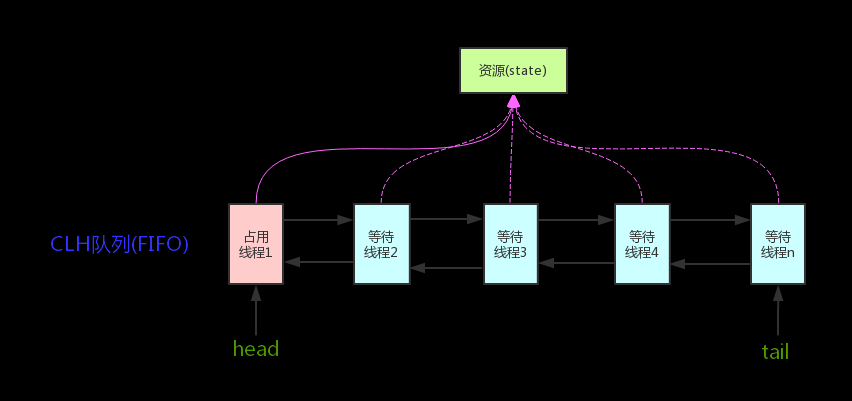
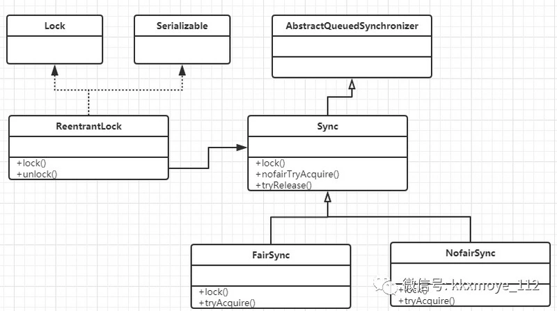
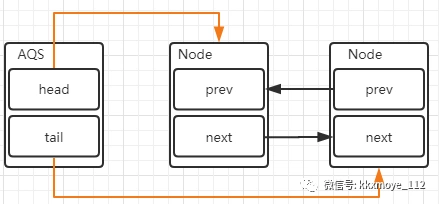
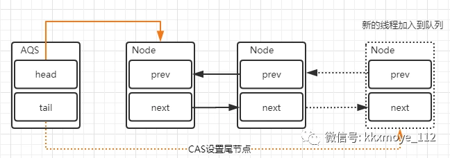
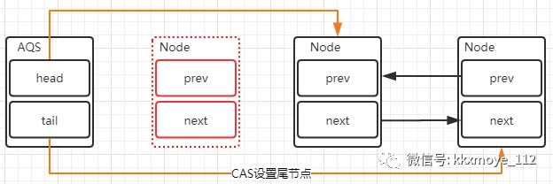
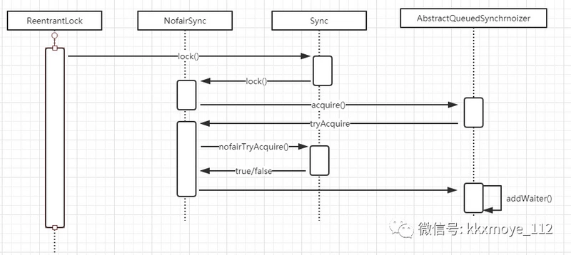

简单解释一下J.U.C，是JDK中提供的并发工具包,
java.util.concurrent。里面提供了很多并发编程中很常用的实用工具类，比如atomic原子操作、比如lock同步锁、fork/join等。
概述
谈到并发，不得不谈ReentrantLock；而谈到ReentrantLock，不得不谈AbstractQueuedSynchronizer（AQS）！

类如其名，抽象的队列式的同步器，AQS定义了一套多线程访问共享资源的同步器框架，许多同步类实现都依赖于它，如常用的ReentrantLock/Semaphore/CountDownLatch…。
它维护了一个volatile int state（代表共享资源）和一个FIFO线程等待队列（多线程争用资源被阻塞时会进入此队列）。这里volatile是核心关键词，具体volatile的语义，在此不述。state的访问方式有三种:
1 | getState() |
AQS定义两种资源共享方式：Exclusive（独占，只有一个线程能执行，如ReentrantLock）和Share（共享，多个线程可同时执行，如Semaphore/CountDownLatch）。
不同的自定义同步器争用共享资源的方式也不同。自定义同步器在实现时只需要实现共享资源state的获取与释放方式即可，至于具体线程等待队列的维护（如获取资源失败入队/唤醒出队等），AQS已经在顶层实现好了。自定义同步器实现时主要实现以下几种方法：
isHeldExclusively()：该线程是否正在独占资源。只有用到condition才需要去实现它。tryAcquire(int)：独占方式。尝试获取资源，成功则返回true，失败则返回false。tryRelease(int)：独占方式。尝试释放资源，成功则返回true，失败则返回false。tryAcquireShared(int)：共享方式。尝试获取资源。负数表示失败；0表示成功，但没有剩余可用资源；正数表示成功，且有剩余资源。tryReleaseShared(int)：共享方式。尝试释放资源，如果释放后允许唤醒后续等待结点返回true，否则返回false。
以ReentrantLock为例，state初始化为0，表示未锁定状态。A线程lock()时，会调用tryAcquire()独占该锁并将state+1。此后，其他线程再tryAcquire()时就会失败，直到A线程unlock()到state=0（即释放锁）为止，其它线程才有机会获取该锁。当然，释放锁之前，A线程自己是可以重复获取此锁的（state会累加），这就是可重入的概念。但要注意，获取多少次就要释放多么次，这样才能保证state是能回到零态的。
再以CountDownLatch以例，任务分为N个子线程去执行，state也初始化为N（注意N要与线程个数一致）。这N个子线程是并行执行的，每个子线程执行完后countDown()一次，state会CAS减1。等到所有子线程都执行完后(即state=0)，会unpark()主调用线程，然后主调用线程就会从await()函数返回，继续后余动作。
一般来说，自定义同步器要么是独占方法，要么是共享方式，他们也只需实现tryAcquire-tryRelease、tryAcquireShared-tryReleaseShared中的一种即可。但AQS也支持自定义同步器同时实现独占和共享两种方式，如ReentrantReadWriteLock。
从Lock作为切入点
我想以lock作为切入点来讲解AQS，毕竟同步锁是解决线程安全问题的通用手段，也是我们工作中用得比较多的方式。
Lock API
Lock是一个接口，方法定义如下
1 | void lock() // 如果锁可用就获得锁，如果锁不可用就阻塞直到锁释放 |
Lock的实现
实现Lock接口的类有很多，以下为几个常见的锁实现
- ReentrantLock：表示重入锁，它是唯一一个实现了Lock接口的类。重入锁指的是线程在获得锁之后，再次获取该锁不需要阻塞，而是直接关联一次计数器增加重入次数。
- ReentrantReadWriteLock：重入读写锁，它实现了ReadWriteLock接口，在这个类中维护了两个锁，一个是ReadLock，一个是WriteLock，他们都分别实现了Lock接口。读写锁是一种适合读多写少的场景下解决线程安全问题的工具，基本原则是：
读和读不互斥、读和写互斥、写和写互斥。也就是说涉及到影响数据变化的操作都会存在互斥。 - StampedLock： stampedLock是JDK8引入的新的锁机制，可以简单认为是读写锁的一个改进版本，读写锁虽然通过分离读和写的功能使得读和读之间可以完全并发，但是读和写是有冲突的，如果大量的读线程存在，可能会引起写线程的饥饿。stampedLock是一种乐观的读策略，使得乐观锁完全不会阻塞写线程。
ReentrantLock的简单实用
如何在实际应用中使用ReentrantLock呢？我们通过一个简单的demo来演示一下
1 | public class Demo { |
这段代码主要做一件事，就是通过一个静态的incr()方法对共享变量count做连续递增，在没有加同步锁的情况下多线程访问这个方法一定会存在线程安全问题。所以用到了ReentrantLock来实现同步锁，并且在finally语句块中释放锁。
那么我来引出一个问题，大家思考一下
多个线程通过lock竞争锁时，当竞争失败的锁是如何实现等待以及被唤醒的呢?
什么是AQS
AQS全称为AbstractQueuedSynchronizer，它提供了一个FIFO队列，可以看成是一个用来实现同步锁以及其他涉及到同步功能的核心组件，常见的有:ReentrantLock、CountDownLatch等。
AQS是一个抽象类，主要是通过继承的方式来使用，它本身没有实现任何的同步接口，仅仅是定义了同步状态的获取以及释放的方法来提供自定义的同步组件。
可以这么说，只要搞懂了AQS，那么J.U.C中绝大部分的api都能轻松掌握。
AQS的两种功能
从使用层面来说，AQS的功能分为两种：独占和共享
- 独占锁，每次只能有一个线程持有锁，比如前面给大家演示的ReentrantLock就是以独占方式实现的互斥锁
- 共享锁，允许多个线程同时获取锁，并发访问共享资源，比如ReentrantReadWriteLock
ReentrantLock的类图
仍然以ReentrantLock为例，来分析AQS在重入锁中的使用。毕竟单纯分析AQS没有太多的含义。先理解这个类图，可以方便我们理解AQS的原理

AQS的内部实现
AQS的实现依赖内部的同步队列,也就是FIFO的双向队列（不是双端队列，双端队列是指允许两端都可以进行入队和出队操作的队列），如果当前线程竞争锁失败，那么AQS会把当前线程以及等待状态信息构造成一个Node加入到同步队列中，同时再阻塞该线程。当获取锁的线程释放锁以后，会从队列中唤醒一个阻塞的节点(线程)。

AQS队列内部维护的是一个FIFO的双向链表，这种结构的特点是每个数据结构都有两个指针，分别指向直接的后继节点和直接前驱节点。所以双向链表可以从任意一个节点开始很方便的访问前驱和后继。每个Node其实是对线程的封装，当线程争抢锁失败后会封装成Node加入到ASQ队列中去
Node类的组成如下
1 | static final class Node { |
释放锁以及添加线程对于队列的变化
添加节点
当出现锁竞争以及释放锁的时候，AQS同步队列中的节点会发生变化，首先看一下添加节点的场景。

这里会涉及到两个变化
- 新的线程封装成Node节点追加到同步队列中，设置prev节点以及修改当前节点的前置节点的next节点指向自己
- 通过CAS将tail重新指向新的尾部节点
释放锁移除节点
head节点表示获取锁成功的节点，当头结点在释放同步状态时，会唤醒后继节点，如果后继节点获得锁成功，会把自己设置为头结点，节点的变化过程如下

这个过程也是涉及到两个变化
- 修改head节点指向下一个获得锁的节点
- 新的获得锁的节点，将prev的指针指向null
这里有一个小的变化，就是设置head节点不需要用CAS，原因是设置head节点是由获得锁的线程来完成的，而同步锁只能由一个线程获得，所以不需要CAS保证，只需要把head节点设置为原首节点的后继节点，并且断开原head节点的next引用即可
AQS的源码分析
清楚了AQS的基本架构以后，我们来分析一下AQS的源码，仍然以ReentrantLock为模型。
ReentrantLock的时序图
调用ReentrantLock中的lock()方法，源码的调用过程我使用了时序图来展现

从图上可以看出来，当锁获取失败时，会调用addWaiter()方法将当前线程封装成Node节点加入到AQS队列，基于这个思路，我们来分析AQS的源码实现
分析源码
ReentrantLock.lock()
1 | public void lock() { |
这个是获取锁的入口，调用sync这个类里面的方法，sync是什么呢？
1 | abstract static class Sync extends AbstractQueuedSynchronizer |
sync是一个静态内部类，它继承了AQS这个抽象类，前面说过AQS是一个同步工具，主要用来实现同步控制。我们在利用这个工具的时候，会继承它来实现同步控制功能。
通过进一步分析，发现Sync这个类有两个具体的实现，分别是NofairSync(非公平锁),FailSync(公平锁).
- 公平锁：表示所有线程严格按照FIFO来获取锁
- 非公平锁： 表示可以存在抢占锁的功能，也就是说不管当前队列上是否存在其他线程等待，新线程都有机会抢占锁
公平锁和非公平锁的实现上的差异，我会在文章后面做一个解释，接下来的分析仍然以非公平锁作为主要分析逻辑。
NonfairSync.lock
1 | final void lock() { |
这段代码简单解释一下
- 由于这里是非公平锁，所以调用lock方法时，先去通过cas去抢占锁
- 如果抢占锁成功，保存获得锁成功的当前线程
- 抢占锁失败，调用acquire来走锁竞争逻辑
compareAndSetState
compareAndSetState的代码实现逻辑如下
1 | // See below for intrinsics setup to support this |
}
2
3
4
> 这个操作是原子的，不会出现线程安全问题，这里面涉及到Unsafe这个类的操作，一级涉及到state这个属性的意义。
> **state**
>
- 当state=0时，表示无锁状态
- 当state>0时，表示已经有线程获得了锁，也就是state = 1，但是因为ReentrantLock允许重入，所以同一个线程多次获得同步锁的时候，state会递增，比如重入5次，那么state=5。 而在释放锁的时候，同样需要释放5次直到state=0其他线程才有资格获得锁
2
>
需要注意的是：不同的AQS实现，state所表达的含义是不一样的。
Unsafe
Unsafe类是在sun.misc包下，不属于Java标准。但是很多Java的基础类库，包括一些被广泛使用的高性能开发库都是基于Unsafe类开发的，比如Netty、Hadoop、Kafka等；Unsafe可认为是Java中留下的后门，提供了一些低层次操作，如直接内存访问、线程调度等
2
>
这个是一个native方法， 第一个参数为需要改变的对象，第二个为偏移量(即之前求出来的headOffset的值)，第三个参数为期待的值，第四个为更新后的值
整个方法的作用是如果当前时刻的值等于预期值var4相等，则更新为新的期望值 var5，如果更新成功，则返回true，否则返回false；
acquire
acquire是AQS中的方法，如果CAS操作未能成功，说明state已经不为0，此时继续acquire(1)操作,这里大家思考一下，acquire方法中的1的参数是用来做什么呢？如果没猜中，往前面回顾一下state这个概念
1 | public final void acquire(int arg) { |
这个方法的主要逻辑是
- 通过tryAcquire尝试获取独占锁，如果成功返回true，失败返回false
- 如果tryAcquire失败，则会通过addWaiter方法将当前线程封装成Node添加到AQS队列尾部
- acquireQueued，将Node作为参数，通过自旋去尝试获取锁。
如果大家看过我写的Synchronized源码分析的文章，就应该能够明白自旋存在的意义
NonfairSync.tryAcquire
这个方法的作用是尝试获取锁，如果成功返回true，不成功返回false
它是重写AQS类中的tryAcquire方法，并且大家仔细看一下AQS中tryAcquire方法的定义，并没有实现，而是抛出异常。按照一般的思维模式，既然是一个不实现的模版方法，那应该定义成abstract，让子类来实现呀？大家想想为什么
1 | protected final boolean tryAcquire(int acquires) { |
nonfairTryAcquire
tryAcquire(1)在NonfairSync中的实现代码如下
1 | ffinal boolean nonfairTryAcquire(int acquires) { |
- 获取当前线程，判断当前的锁的状态
- 如果state=0表示当前是无锁状态，通过cas更新state状态的值
- 如果当前线程是属于重入，则增加重入次数
addWaiter
当tryAcquire方法获取锁失败以后，则会先调用addWaiter将当前线程封装成Node，然后添加到AQS队列
1 | private Node addWaiter(Node mode) { //mode=Node.EXCLUSIVE |
- 将当前线程封装成Node
- 判断当前链表中的tail节点是否为空，如果不为空，则通过cas操作把当前线程的node添加到AQS队列
- 如果为空或者cas失败，调用enq将节点添加到AQS队列
enq
enq就是通过自旋操作把当前节点加入到队列中
1 | private Node enq(final Node node) { |
假如有两个线程t1,t2同时进入enq方法，t==null表示队列是首次使用，需要先初始化
另外一个线程cas失败，则进入下次循环，通过cas操作将node添加到队尾
到目前为止，通过addwaiter方法构造了一个AQS队列，并且将线程添加到了队列的节点中
acquireQueued
将添加到队列中的Node作为参数传入acquireQueued方法，这里面会做抢占锁的操作
1 | final boolean acquireQueued(final Node node, int arg) { |
- 获取当前节点的prev节点
- 如果prev节点为head节点，那么它就有资格去争抢锁，调用tryAcquire抢占锁
- 抢占锁成功以后，把获得锁的节点设置为head，并且移除原来的初始化head节点
- 如果获得锁失败，则根据waitStatus决定是否需要挂起线程
- 最后，通过cancelAcquire取消获得锁的操作
前面的逻辑都很好理解，主要看一下shouldParkAfterFailedAcquire这个方法和parkAndCheckInterrupt的作用
shouldParkAfterFailedAcquire
从上面的分析可以看出，只有队列的第二个节点可以有机会争用锁，如果成功获取锁，则此节点晋升为头节点。对于第三个及以后的节点，if (p == head)条件不成立，首先进行shouldParkAfterFailedAcquire(p, node)操作
shouldParkAfterFailedAcquire方法是判断一个争用锁的线程是否应该被阻塞。它首先判断一个节点的前置节点的状态是否为Node.SIGNAL，如果是，是说明此节点已经将状态设置-如果锁释放，则应当通知它，所以它可以安全的阻塞了，返回true。
1 | private static boolean shouldParkAfterFailedAcquire(Node pred, Node node) { |
parkAndCheckInterrupt
如果shouldParkAfterFailedAcquire返回了true，则会执行：parkAndCheckInterrupt()方法，它是通过LockSupport.park(this)将当前线程挂起到WATING状态，它需要等待一个中断、unpark方法来唤醒它，通过这样一种FIFO的机制的等待，来实现了Lock的操作。
1 | private final boolean parkAndCheckInterrupt() { |
LockSupport
LockSupport类是Java6引入的一个类，提供了基本的线程同步原语。LockSupport实际上是调用了Unsafe类里的函数，归结到Unsafe里，只有两个函数：
2
3
> public native void park(boolean isAbsolute, long time);
>
unpark函数为线程提供“许可(permit)”，线程调用park函数则等待“许可”。这个有点像信号量，但是这个“许可”是不能叠加的，“许可”是一次性的。
permit相当于0/1的开关，默认是0，调用一次unpark就加1变成了1.调用一次park会消费permit，又会变成0。 如果再调用一次park会阻塞，因为permit已经是0了。直到permit变成1.这时调用unpark会把permit设置为1.每个线程都有一个相关的permit，permit最多只有一个，重复调用unpark不会累积
锁的释放
ReentrantLock.unlock
加锁的过程分析完以后，再来分析一下释放锁的过程，调用release方法，这个方法里面做两件事，
1，释放锁 ；
2，唤醒park的线程
1 | public final boolean release(int arg) { |
tryRelease
这个动作可以认为就是一个设置锁状态的操作，而且是将状态减掉传入的参数值（参数是1），如果结果状态为0，就将排它锁的Owner设置为null，以使得其它的线程有机会进行执行。
在排它锁中，加锁的时候状态会增加1（当然可以自己修改这个值），在解锁的时候减掉1，同一个锁，在可以重入后，可能会被叠加为2、3、4这些值，只有unlock()的次数与lock()的次数对应才会将Owner线程设置为空，而且也只有这种情况下才会返回true。
1 | protected final boolean tryRelease(int releases) { |
unparkSuccessor
在方法unparkSuccessor(Node)中，就意味着真正要释放锁了，它传入的是head节点（head节点是占用锁的节点），当前线程被释放之后，需要唤醒下一个节点的线程
1 | private void unparkSuccessor(Node node) { |
总结
通过这篇文章基本将AQS队列的实现过程做了比较清晰的分析，主要是基于非公平锁的独占锁实现。在获得同步锁时，同步器维护一个同步队列，获取状态失败的线程都会被加入到队列中并在队列中进行自旋；移出队列（或停止自旋）的条件是前驱节点为头节点且成功获取了同步状态。在释放同步状态时，同步器调用tryRelease(int arg)方法释放同步状态，然后唤醒头节点的后继节点。